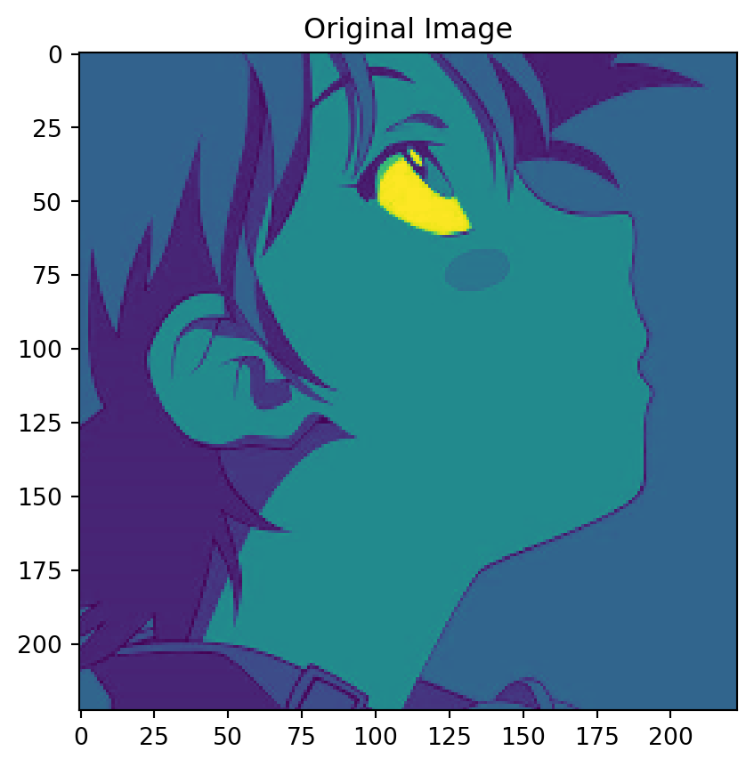
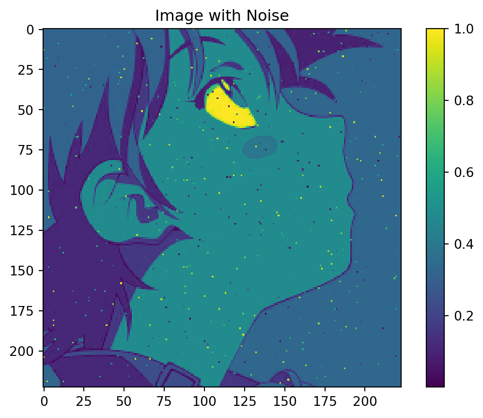
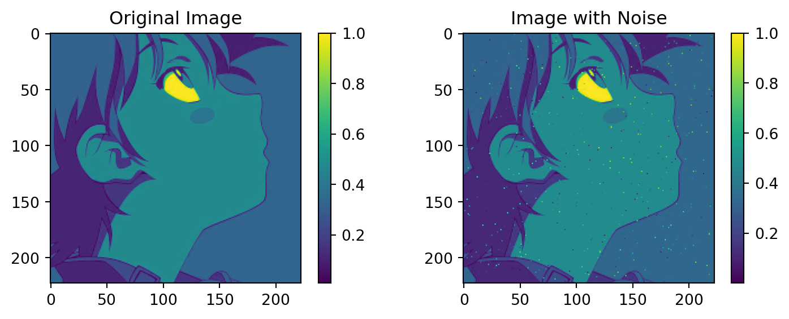

在一个双目立体视觉项目中，我从一位师兄那里了解到了导向滤波算法（guided image filtering）[1]。引入这个算法来平滑双目图像的匹配代价后，在仅使用非常基本的立体匹配算法的前提下，输出的深度图质量立竿见影地有了提高。就像何凯明的ResNet、Mask R-CNN等工作一样，他的导向滤波算法也给我留下了非常好的印象。
本文记录了我对该算法的理解，并提供了一份简单的Python代码实现。
1 问题背景
导向滤波算法要处理的是如何在平滑图像的同时“保边”的问题——既要平滑图像，但是又不能让原图像中包含线条细节的部分变模糊。不仅是立体匹配算法，人像美化、图像去雾等应用领域都有类似的需求。在导向滤波之前，人们往往应用双边滤波器（bilateral filter）来应对。但是双边滤波器的时间复杂度不尽如人意，而且在应用于图像细节增强时会发生“梯度反转（gradient reversal）”问题。
在介绍导向滤波之前，先给出基本定义： 记输入图像为\(p\)，引导图为\(I\)，输出图像为\(q\)，一个线性平移可变滤波（linear translation-variant filter）过程可定义为： \[ q_i = \sum_j W_{ij}(I) p_j， \tag{1} \] 其中，i和j是像素的索引，滤波器核\(W_{ij}\)是导向图\(I\)的函数。滤波器核\(W_{ij}\)与\(p\)无关，故我们称该滤波器相对于\(p\)是线性（linear）的。\(W_{ij}\)与像素位置有关，即不同位置的滤波器核也不同，故称它是平移可变（translation-variant）的。双边滤波和导向滤波都可以归于此类。
2 双边滤波
联合双边滤波器（joint bilateral filter）的滤波器核\(W^{bf}\)可以用如下公式表示： \[ W^{bf}_{ij} = \frac{1}{K_i} \exp(-\frac{\left|\vec x_i - \vec x_j\right|^2}{\sigma_s^2}) \exp(-\frac{\left| I_i - I_j \right|^2}{\sigma_r^2}). \tag{2} \]
其中\(\vec x\)为像素位置，\(K_i\)是使得\(\sum_j W_{ij}^{bf}=1\)的缩放系数。\(\sigma_s,\sigma_r\)是调整位置相似度和灰度/颜色相似度的参数。当\(I\)=\(p\)时，联合双边滤波器退化为双边滤波器（bilateral filter）。
从公式中容易看出，双边滤波为位置相近和像素值相近的像素赋予更高的权重。
2.1 时间复杂度
双边滤波的时间复杂度为\(O(Nr^2)\)，其中\(r\)为滤波器窗口的尺寸。在采取近似算法，牺牲图像质量的情况下，双边滤波能取得\(O(N)\)的时间复杂度。
2.2 梯度反转问题
导向滤波原论文[1]指出，在应用双边滤波做细节增强时，双边滤波器会出现梯度反转问题。这是因为在图像上梯度较大的区域，像素变化剧烈，像素之间相似度低，公式 2中的权重都不高，导致滤波结果不稳定。
3 导向滤波
导向滤波一方面在时间复杂度方面较双边滤波器有优势，另一方面通过假设输出图是导向图的线性变换，减轻了梯度反转问题。
导向滤波器的核心假设是，在以像素\(k\)为中心的窗口\(\omega_k\)内，输出图像\(q\)可表示为导向图\(I\)的线性变换： \[ q_i = a_k I_i + b_k , \forall i \in \omega_k, \tag{3} \] 其中\((a_k, b_k)\)被假设为窗口\(\omega_k\)内的常量。设窗口是半径为\(r\)的方形。在窗口内，由于\(\nabla q = a\nabla I\)，所以我们可以认为输出图像保留了导向图的梯度趋势。
为求解公式 3，可最小化如下代价函数： \[ E(a_k, b_k) = \sum_{i\in \omega_k} ((a_k I_i + b_k - p_i)^2 + \epsilon a_k^2). \tag{4} \] 后续我们将看到，\(\epsilon\)用于避免\(|a_k|\)过大。
最小化公式 4的解如下： \[ \begin{aligned} a_k &= \frac{\frac{1}{|\omega|}\sum_{i\in \omega_k}I_ip_i - \mu_k \bar p_k}{\sigma^2_k + \epsilon}\\ b_k &= \bar p_k - a_k \mu_k. \end{aligned} \tag{5} \] 其中，\(\mu_k\)和\(\sigma_k^2\)分别为窗口\(\omega_k\)内\(I\)的均值和方差，\(\left|\omega\right|\)是窗口\(\omega_k\)内的像素数量，\(\bar p_k\)是\(\omega_k\)内，图像\(p\)的像素均值。
至此，我们构建了在窗口\(\omega_k\)内的滤波规则。但是，像素\(q_i\)被包含在多个窗口中，每个窗口在\(i\)位置的滤波结果都不相同。对此，导向滤波简单地计算所有窗口的滤波结果的平均。即 \[ \begin{aligned} q_i &= \frac{1}{|\omega|} \sum_{k:i\in\omega_k}(a_kI_i+b_k) \\ &= \bar a_iI_i+\bar b_i \end{aligned} \tag{6} \] 其中\(\bar a_i = \frac{1}{|\omega|} \sum_{k\in\omega_i} a_k\)，\(\bar b_i = \frac{1}{|\omega|} \sum_{k\in \omega_i}b_k\)
经过这个平均操作，我们无法保证\(\nabla_q\)是\(\nabla_I\)的线性变换，但我们仍然假设\(\nabla_q\)的梯度与\(\nabla_I\)的梯度是接近的。
4 Python实现
以下代码给出了导向滤波器的简单Python实现。其计算参考公式 5, 公式 6。
import cv2 as cv
def guided_filter(input_image, guide_image, kernel_radius, epsilon):
d = kernel_radius * 2 + 1
window_size = d**2
I_mean = cv.blur(guide_image, (d, d))
I_sq_mean = cv.blur(guide_image**2, (d, d))
sigma_sq = I_sq_mean - I_mean**2
Ip_mean = cv.blur(guide_image * input_image, (d, d))
p_mean = cv.blur(input_image, (d, d))
a = (Ip_mean - I_mean * p_mean) / (sigma_sq + epsilon)
b = p_mean - a * I_mean
a_mean = cv.blur(a, (d, d))
b_mean = cv.blur(b, (d, d))
q = a_mean * guide_image + b_mean
return q 4.1 效果测试
本节用具体的示例展示了导向滤波的效果和特点。
首先，我们读取一张图像，并将其转换到合适的格式和尺寸。
import numpy as np
import matplotlib.pyplot as plt
np.random.seed(0)
img = cv.imread('test_img.png', cv.IMREAD_COLOR)
img = cv.cvtColor(img, cv.COLOR_BGR2RGB).astype(np.float32) / 255.
img = cv.resize(img, None, fx=0.5, fy=0.5)
img_gray = np.mean(img, axis=-1)
plt.imshow(img_gray)
plt.title('Original Image');
接著，为原图像加上简单的噪声：
img_gray_with_noise = img_gray * 1
coords = tuple(np.random.randint(0, size - 1, 1000) for size in img_gray.shape)
img_gray_with_noise[coords] += np.random.randn(len(coords[0]), ) * 0.2
img_gray_with_noise = np.clip(img_gray_with_noise, 0, 1)
plt.imshow(img_gray_with_noise)
plt.title('Image with Noise')
plt.colorbar();
在噪声图上应用先前写好的导向滤波实现（以噪声图为导向图），结果如下：
r = 5
out_gray = guided_filter(
img_gray_with_noise,
img_gray_with_noise,
kernel_radius=r,
epsilon=0.01
)
plt.figure(figsize=(6, 18))
plt.subplot(311)
plt.imshow(img_gray)
plt.title('Original Image')
plt.colorbar()
plt.subplot(312)
plt.imshow(img_gray_with_noise)
plt.title('Image with Noise')
plt.colorbar()
plt.subplot(313)
plt.imshow(out_gray)
plt.title('After Filtering')
plt.colorbar()
plt.show()
从滤波结果中可以看到，图像中角色面部大部分的噪点都被成功的平滑了。美中不足的是，线条附近的噪点仍然被保留下来。这是因为导向滤波是一个保边的滤波器。如果遇到图像的边缘，那么这个地方的平滑效果就会降低。
4.2 时间复杂度和加速方法
与联合双边滤波相比，导向滤波的优势之一使其简单的实现方式和其较低的时间复杂度。下面将讨论如何高效的实现导向滤波算法。
从上面提供的代码实现可以看出，导向滤波是固定若干步均值滤波构成的。那么问题就变成如何高效地完成均值滤波。
积分法
一个非常有名，应用广泛的计算均值滤波的方法是积分法。设输入图像\(p\)的形状是大小为\(h\times w\)的矩形，我们可以\(O(N)=O(h\times w)\)的时间复杂度得到其积分图\(F\)，大小为\((h+1)\times(w+1)\)。对于\(F\)上的任意像素\((i, j)\)，
\[ F(i, j) = \sum_{x < i, y < j} p(i, j), \]
那么矩形区域\(x_1 <= x < x_2, y_1 <= y < y_2\)内像素的和等于
\[ F(x_2, y_2) - F(x_2, y_1) - F(x_1, y_2) + F(x_1, y_1). \]
于是基于积分图便可以实现\(O(N)\)时间复杂度的均值滤波。基于这个理由，我们说导向滤波的时间复杂度是\(O(N)\). 注意\(O(N)\)表明该算法与窗口半径\(r\)无关，因此我们可以任意选择\(r\)的大小!
这里我想插入一点个人的小看法。基于积分法的\(O(N)\)时间复杂度是基于CPU实现的。实际应用中，我们常常会选择GPU来实现均值滤波。这时候并不能认为\(r\)是一个与算法效率无关的参数。
图片缩放法
另一个优化角度是从图像分辨率出发。导向滤波的结果由输入图像和导向图共同决定。在导向图和原输入图的代价不一样昂贵时，我们可以考虑采用低分辨率的图像。例如，采用\(\frac{1}{2}\)大小的输入图像和与原图片尺寸相同的导向图，这可能使我们能在节省计算量的情况下，不牺牲太多的图像质量。
5 理论分析
5.1 \(\epsilon\)的作用
假设使用原图作为导向图，即\(I=p\)。若\(\epsilon = 0\)，则显然
\[ \begin{aligned} a_k &= \frac{\frac{1}{\left|\omega\right|} \sum_{i\in\omega_k} I_i^2 - \mu_k^2}{\sigma_k^2} \\ &= \frac{\sigma_k^2}{\sigma_k^2 + \epsilon} \\ &= 1 \\ b_k &= \bar p_k - a_k \mu_k \\ &= \mu_k - \mu_k \\ &= 0 \end{aligned} \]
此时，输出等于输入。（但是实践中公式 5中有分母\(\sigma_k^2+\epsilon\)，我们需要取\(\epsilon > 0\)才能避免除0异常。）
若\(\epsilon > 0\)，分两种极端的情况讨论：
一、窗口\(\omega_k\)内是平坦区域，即\(\sigma_k = 0\)，此时
\[ \begin{aligned} a_k &= \frac{\sigma_k^2}{\sigma_k^2 + \epsilon} \\ &= 0 \\ b_k &= \bar p_k - a_k \mu_k \\ &= \bar p_k \end{aligned} \]
此时导向滤波退化为均值滤波。
二、窗口\(\omega_k\)内像素方差大，即\(\omega_k\rightarrow\infty\)，此时
\[ \begin{aligned} a_k &= \frac{\sigma_k^2}{\sigma_k^2 + \epsilon} \\ &\approx 1 \\ b_k &= \bar p_k - a_k \mu_k \\ &\approx 0 \end{aligned} \]
此时输出约等于输入。
一般的，可以认为导向滤波通过比较\(\epsilon\)和\(\sigma_k^2\)的大小调控图像的平滑程度。如果\(\epsilon\)远大于方差\(\sigma_k^2\)，那么\(a_k\)接近于0，图像变平滑；反之若\(\epsilon\)远小于方差，那么平滑程度便会削弱。